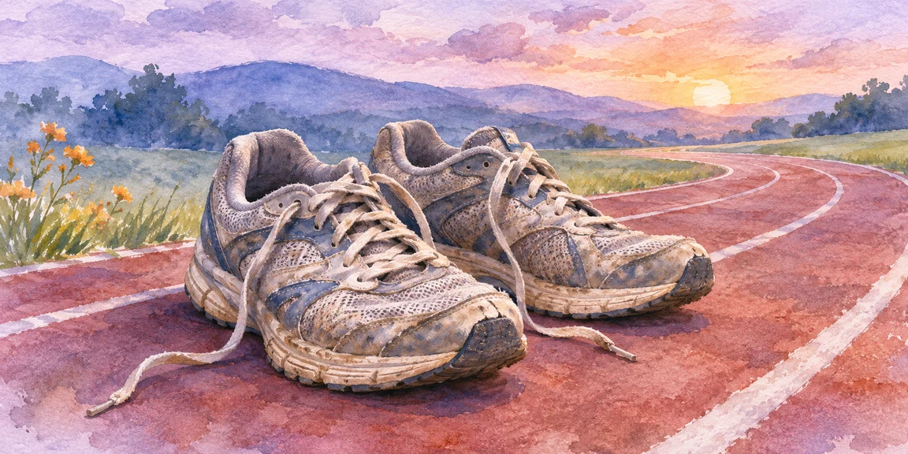

Shoe Dog – Nike Story
읽고 · 말하고 · 생각하는 영어

학습 안내
Shoe Dog - 나이키스토리
핵심 단어 · Key Vocabulary
Passion: 열정
Fascinating: 대단히 흥미로운, 매력적인
Financial: 재정적인, 돈과 관련된
Suggest: 제안하다
Birth: 탄생, 시작
Satisfied: 만족해하는
Employee: 직원
Incredibly: 믿기 힘들 정도로, 매우
Goddess: 여신
Devoted: 헌신적인, 몰두하는
Victory: 승리
From the trunk of his car: 그의 자동차 트렁
크에서
Symbol: 상징
Lead to: ~로 이어지다, ~라는 결과를 낳다
Definition: 정의 (어떤 말의 뜻)
At first: 처음에는
Import: 수입하다
Give up: 포기하다
Keep going: 계속 나아가다, 멈추지 않다
As long as: ~하는 한, ~하기만 하면
회화 패턴 · Speaking Patterns
1.
Lead to ~ (~로 이어지다, 결과를 낳다)
Hard work will lead to great results. (열심히 노력하면 좋은 결과로 이어질 것입니다.)
2.
Be satisfied with ~ (~에 만족하다)
He was not satisfied with the first design. (그는 첫 번째 디자인에 만족하지 않았습니다.)
본문 읽기 · Reading
The Spirit of a "Shoe Dog"
Phil Knight was a young runner who dreamed of making better sports shoes. He started
a small company called Blue Ribbon Sports and sold shoes from the trunk of his car.
Although he faced many financial problems, he never stopped moving forward. His
passion eventually led to the birth of the global brand, Nike.
The name "Nike" and its logo also have fascinating stories. Phil's first employee
suggested the name after seeing the Greek goddess of victory in a dream. The famous
"Swoosh" logo was designed by a college student for only $35. Phil was not satisfied
with the design at first, but it has now become a world-famous symbol of victory.
What made Phil Knight so successful? The answer is his "Shoe Dog" spirit. A "shoe dog"
is a person who loves shoes and never gives up. Phil believes that we should just keep
going, even when things are incredibly hard. His life teaches us that, like a true "Shoe
Dog," we can always find our own way as long as we love what we do.
출처 : 「슈독(Shoe Dog)」 by Phil Knight (Phil Knight : Nike 창업자)
한국어 해석 · Translation
슈독(Shoe Dog)의 정신
필 나이트는 더 좋은 운동화를 만들기를 꿈꿨던 젊은 러너였습니다. 그는 '블루 리본 스포츠'라는 작은 회사를 차렸
고, 자신의 자동차 트렁크에서 신발을 팔았습니다. 비록 많은 재정적 어려움을 겪었지만, 그는 전진하는 것을 결코
멈추지 않았습니다. 그의 열정은 결국 우리가 현재 알고 있는 세계적인 브랜드, 나이키의 탄생으로 이어졌습니다.
'나이키'라는 이름과 로고에도 흥미로운 이야기가 담겨 있습니다. 필의 첫 번째 직원은 꿈에서 그리스 승리의 여신
을 본 뒤 '나이키'라는 이름을 제안했습니다. 유명한 '스우시(Swoosh)' 로고는 당시 한 대학생이 단돈 35달러를 받
고 디자인한 것이었습니다. 필은 처음에는 그 디자인이 마음에 들지 않았지만, 그것은 이제 세계적으로 유명한 승
리의 상징이 되었습니다.
필 나이트를 그토록 성공하게 만든 것은 무엇이었을까요? 그 답은 바로 그의 '슈독(Shoe Dog)' 정신에 있습니다.
'슈독'이란 신발을 사랑하고 절대 포기하지 않는 사람을 의미합니다. 필은 상황이 믿기 힘들 정도로 어려울 때조차
우리는 그저 계속 나아가야 한다고 믿습니다. 그의 삶은 우리가 하는 일을 진심으로 사랑하기만 한다면, 진정한 '슈
독'처럼 언제나 우리만의 길을 찾을 수 있다는 것을 가르쳐 줍니다.
토론 질문 · Discussion Questions
In the beginning, Phil Knight sold shoes from his car. Have you ever started something small with great passion? Tell us your story.
(필 나이트는 자동차에서 신발을 팔며 시작했습니다. 여러분도 큰 열정을 가지고 작게 시작해 본 일이 있나요? 이 야기를 들려주세요.)
The text defines a 'Shoe Dog' as someone who never gives up. Do you consider yourself a 'Shoe Dog' in your field? Why or why not?
(지문에서는 슈독을 '절대 포기하지 않는 사람'으로 정의합니다. 여러분의 분야에서 스스로를 '슈독'이라고 생각하 시나요?)
Nike is famous for 'Just Do It' and 'Just Don't Stop.' Is there something you are trying to 'just do' right now, even if it is difficult?
(나이키는 'Just Do It'과 'Just Don't Stop'으로 유명합니다. 지금 당장 어렵더라도 일단 '그냥 해보고 있는(Just doing)' 일이 있나요?)
If your friend is about to give up on their dream, what advice would you give them based on Phil Knight's story?
(만약 친구가 꿈을 포기하려고 한다면, 필 나이트의 이야기를 바탕으로 어떤 조언을 해주고 싶으신가요?)
예시 답변 · Sample Answers
"Yes. Two years ago, I started a small baking blog. At first, I only had five followers. But I practiced every day because I loved it. Now, many people visit my blog to see my recipes."
"I think so. I have worked as a designer for ten years. Although I face many difficult projects, I never give up and always try to find a better way. I am devoted to my work."
"I am trying to 'just' speak English every day. Sometimes I am afraid of making mistakes, but I remember the 'Just Do It' spirit. So, I just open my mouth and talk to myself in English."
"I would say, 'Don't stop moving forward.' Like Phil Knight, you might face problems now, but they will make you stronger. As long as you love your dream, you will find your own way soon."
오늘의 메시지 · Today’s Message
"It does not matter how slowly you go as long as you do not stop."
- Confucius (공자) - 멈추지만 않는다면 얼마나 천천히 가는지는 중요하지 않다.
영작 연습 · Write It Yourself
1. fascinating
__________________________________________________________________________
2. devoted
__________________________________________________________________________